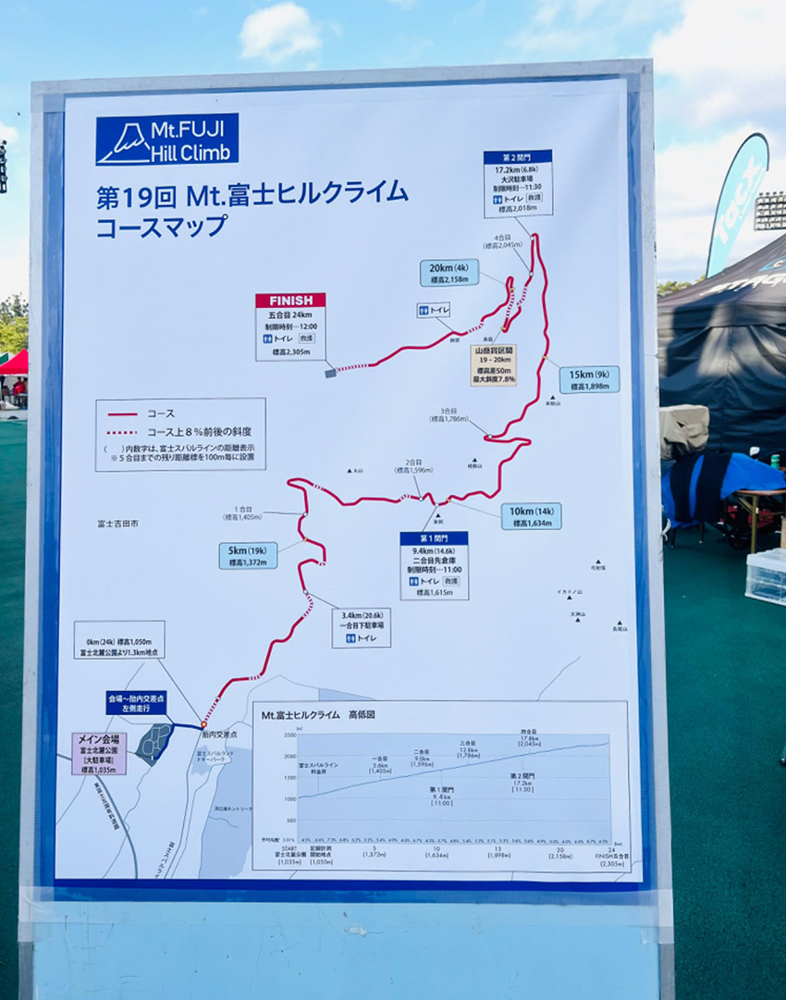
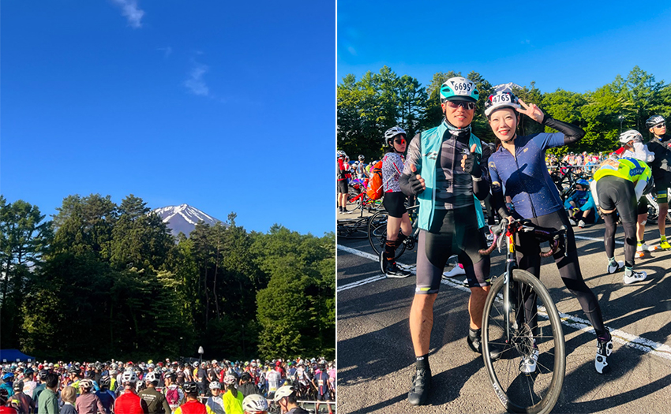
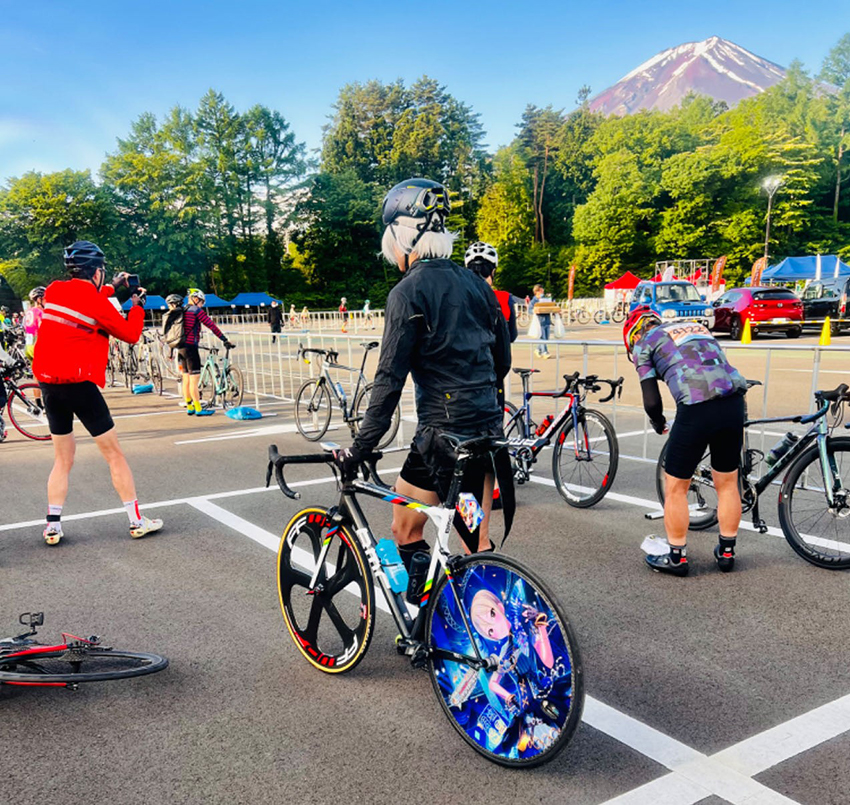
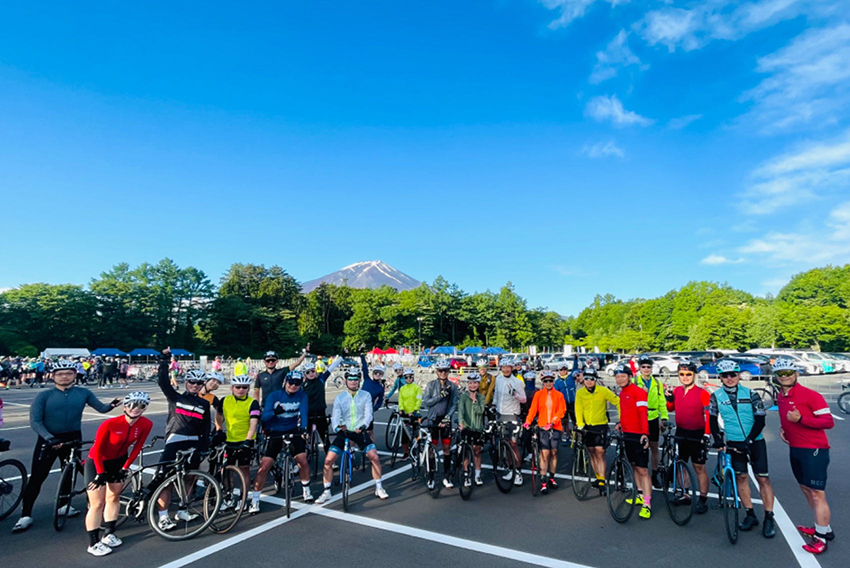
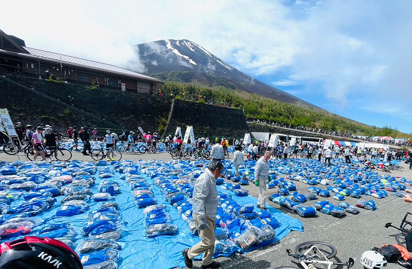
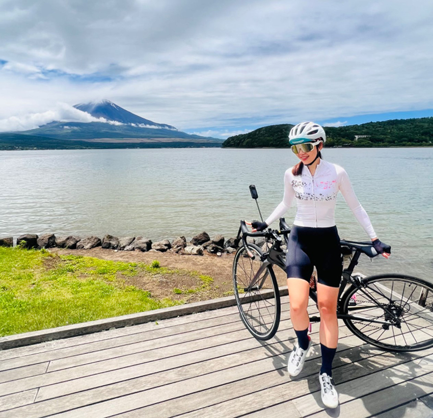
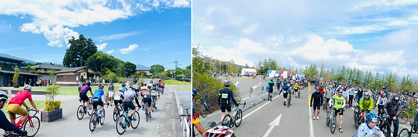
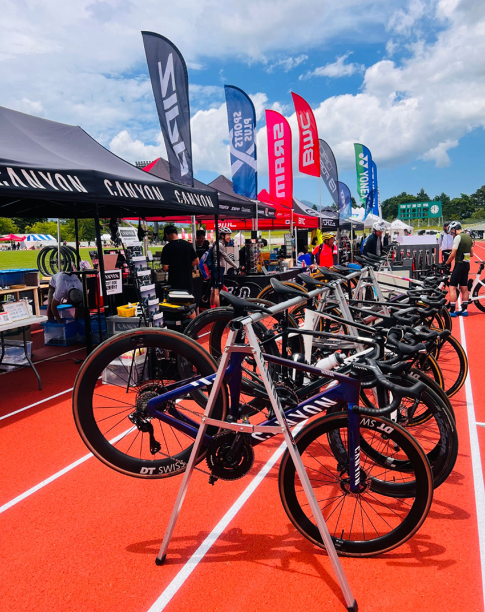

2023初夏，參加富士山公路自行車登山賽，試著探索以往觀光看不到的日本另一面…
源自19年前，靜岡縣為了促進當地觀光，以挑戰富士山為主題而開催，在Subaru Line有料公路上北進富士山，一年只有一天特別限定給參賽的自行車通行。全長25.5公里，起點在富士北麓公園（海拔1051m），終點是富士山五合目（海拔2305m），沒有起伏，一個坡到頂，總爬升1250ｍ，坡度６％～10.5%之間，有晶片計時，選手依完賽時間拿到不同等級的認證，每年近萬名挑戰者，不論夢想奪金的好手，志在解鎖山道的初心者，一同感受富士山的獨特魅力。
|  |
6月４日天空晴。清晨五點半，頭腦開機中，心情加溫著，我們一行台灣隊從河口湖飯店出發，騎往比賽起點，六點半後大會禁止車子上山，日本人守時，六點的富士山腳下，早已是萬人自行車聚的大場面；受到地形和高度影響，現場低溫籠罩，等候出發的選手，須不停的聊天走動，以維持體溫；感情好的抱緊處理，同隊的單車網紅也大方地和人合照，靠在一起蹭熱度。約七點第一梯次開跑，每隔十分放行，直到九點半，估計每十分鐘有五百到一千台車出發，梯次可依個別參賽者的實力或意願選擇，早出發不一定代表早點到，這可是各憑腳力和裝備的。
|  |
話說經典賽事，大家會把穿上最帥最美的車衣，日本車手沒在低調，等候出發的同時，可以一覽各式素人車手的cosplay，除了車衣造型高度還原，還有人樂於展示自己的痛車，讓人難以評論這是要致敬日本選手的認真堅持，亦或嘖啨稱奇他們的宅毒太深。本宅的三觀沒有被顛覆，只有更豐富。
|  |
我和同行隊友於七點出發，放行後一段緩坡，可用來暖身，調整踏頻和迴轉數，一公里外的速霸陸有料收費站，通過後開始計時，殘酷考驗的開始。原本密集的幾百輛自行車陣，漸漸拉長間距，看似親和有禮的日本車手在此刻開始外露他們的本性，拋開謙遜禮讓外裝，發狂地對待腳踏板，存心想讓車尾燈閃退，山上原本就稀薄的空氣，在這冷暴力下，靜得只能聽見此起彼落的陣陣嬌喘和飛輪努力轉動的聲音。我原本還天真地以為這賽事只要用堅持到底的中年大叔軟爛完騎即可，日本選手居然用短跑百米的速度來跑半馬？瞬間天人交戰，腦海放出人生走馬燈，當下思緒歸零，被激出求生意志，不得不開始抽車追趕，想像著狗在追，想像著日本人拼命把車子踩到要爆炸，你怎麼還在睡？集體意志展現出的情緒氛圍，混在空氣中吸入，深刻的領悟，生平莫名第一次小確幸好險自己不是生長在這ＸＸ國度。
|  |
一股作氣猛踩上終點，趁著身體在發燙，蹭了產地直送的火山泥冰淇淋補充血糖，再來就是地標看板前排隊拍照，還要領寄放的保暖衣。身體冷卻下來後誠實發抖，氣溫每上升一百公尺下降0.6度；當天起點溫度為11度，果然山上只有攝氏3度，都說當天的太陽只用來打光的。這賽事已光榮結束但是仍得在冷風中下滑回起點，所以全身包緊緊。下滑出發處有配速車手，每15分領騎出發，若下滑快過領騎車手，本日成績強制歸零，台灣人守法，這規定應是懲罰別國人用的。我頂著寒風下滑，在成為冰棍之前抵達起點，感凍啊！
|  |
此行參賽加半自助旅行，都是騎著公路車前往各景點，比賽當天下午，拜訪了富士五湖和忍野八海。比賽隔日，領隊也安排了108公里騎行環富士山一圈，起起伏伏，總爬升1800ｍ，可謂的深(升)度旅遊，富士山跨了三個縣，順時針繞行可經過遊樂園、牧場、植物園、鐘乳石洞、溫泉、農場、公園、高爾夫球場、滑雪場、神社和Outlet，富士山本來就自帶多元主題和景點，以節能環保方式繞這一圈很值得，感謝老天幫忙和神隊友福報加持，到日本第一天抵達河口湖飯店時還下著大雨，但幾天下來騎行居然都是晴天，拉滿CP，這趟富士山騎行真心感覺超棒。
|  |
|  |
值得一提，比賽前一天和當天，在富士北麓公園廣場有各贊助商的攤位，可逛到日本獨售的公路車相關商品，從最新成車、黑科技零件，到人身部品和運動補給，琳琅滿目，趁日幣便宜，看準下手，錢只是變成自己喜歡的樣子，另一燒錢大場面值得一逛！
|  |